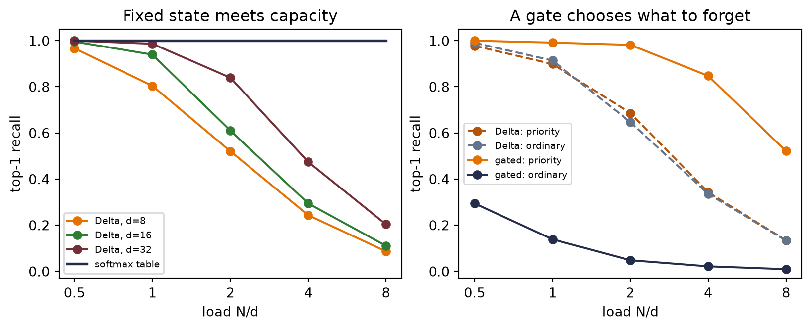

Chapter 13 ended with a question that the attention operator itself had already answered. A query, key, and value need not come from an encoder or a decoder. They need not come from a recurrent network at all. If all three come from the same sequence, each token can ask every token—including itself—what matters and route the answers directly. The recurrent state—the last serial bottleneck left standing—becomes optional.
That substitution is the core of a Transformer. It is also easy to state too quickly. Removing recurrence creates a position problem. Splitting one attention operation into heads creates a bookkeeping problem. Stacking the resulting operations creates an optimization problem. This chapter solves each one—from the equations outward—then returns to the book-corpus benchmark from Chapter 10 with a deliberately small causal Transformer.
Here is the result we have to explain on the same 14,860-character held-out tail. In one exactly matched seed, positional encoding improves the Transformer’s loss from 2.3405 to 1.9190. Yet Chapter 10’s compact LSTM remains better at 1.8881. The new architecture has learned, and position matters in this run—but at this scale, the LSTM still wins.
14.1 Let the sequence query itself
Suppose the sentence contains the words bank, river, and boats. A useful representation of bank should route information from river and boats, while another occurrence—now near loan and interest—should route different information. Chapter 13 built exactly this kind of content-dependent routing. Self-attention changes only the source of the three inputs.
The lecture’s three questions still fit: a query asks “what am I looking for?”, a key advertises “what do I offer?”, and a value carries “what information do I contain?”
Let a batch of token representations be
\[
X \in \mathbb{R}^{B \times n \times d},
\]
where \(B\) is batch size, \(n\) is sequence length, and \(d\) is model width. Learned projections produce
\[
Q=XW_Q,\qquad K=XW_K,\qquad V=XW_V,
\]
with \(W_Q,W_K,W_V\in\mathbb{R}^{d\times d}\). Scaled dot-product attention is
For one sequence, \(QK^\top\) has shape \(n\times n\). Row \(i\) contains the scores from query position \(i\) to every key position \(j\). The row-wise softmax makes each row a distribution, and multiplying by \(V\) returns one weighted sum for each query:
Chapter 10 named time as the book’s third sharing axis. An RNN shares one transition rule across time. Self-attention keeps that stationarity and extends the shared rule across every ordered pair of positions. The weights in a particular attention row still depend on the content; what is shared is the machinery that produces them.
All query positions can be evaluated together during training because none waits for a hidden state from the preceding position. That is a structural statement—not a timing result. Dense self-attention still forms \(n^2\) pairwise scores, and autoregressive generation still emits one new token at a time.
The position debt
Bare self-attention knows content but not slot number. A precise proof is more useful than the slogan.
Let \(P\) be an \(n\times n\) permutation matrix, so \(PX\) reorders the tokens. Then
\[
Q'=PQ,\quad K'=PK,\quad V'=PV
\]
and therefore
\[
Q'K'^\top=P(QK^\top)P^\top.
\]
Write \(S=QK^\top/\sqrt d\); then \(S'=PSP^\top\). Row-wise softmax respects the same simultaneous row-and-column permutation:
Self-attention is permutation equivariant: permute the inputs and the outputs permute in the same way. It is not permutation invariant—the token outputs do not all become identical. But without another signal, the operator has no basis for distinguishing “first” from “fifth.” A pooled sequence summary can consequently become invariant to order.
Chapter 8 planted this debt when convolution received locality “for free.” A convolution knows which values are neighbors because its kernel is tied to nearby offsets. Global attention abandons that built-in geometry—so we must pay to put position back in.
Figure 14.1: The same content is permuted across slots (left). The audit (right) shows bare self-attention rematches after the same output permutation, while fixed positional signals break that rematch.
bare permutation-equivariance error: 2.22e-16
fixed-slot difference after adding position: 1.581
The first error is numerical roundoff, about \(2.2\times10^{-16}\). Adding a fixed signal to each slot changes the rematched outputs by about 1.581 in this example. Position has not been inferred from content; it has been supplied.
14.2 Position as a bank of clocks
The simplest additive code repeats \(i/(n-1)\) in every coordinate. It supplies order, but every position vector lies on the same ray and differs only in magnitude; attention receives no multidirectional geometry. A binary code supplies more coordinates, yet adjacent integers can flip many bits and have poor locality. These are not impossible designs—they are weak inductive biases for a model that must reason about shifts and distances.
Sinusoidal encoding gives every position a bank of clocks. For even model width \(d\), define
The rotation depends on the offset, not the absolute position. This gives learned linear maps a convenient raw material for representing relative shifts. It is a property of the positional pair itself—not a guarantee that arbitrary learned \(W_Q\) and \(W_K\) will preserve or use it.
Figure 14.2: Sinusoidal position is a bank of clocks. Fast coordinates track local offsets; slow coordinates vary across longer ranges. Each sine/cosine pair acts like a clock, and a fixed offset rotates that pair by a start-independent angle.
rotation identity maximum error: 1.11e-16
constant position-vector norm maximum error: 0.00e+00
For \(d=32\), each position vector has norm \(\sqrt{d/2}=4\) because every \(\sin^2+\cos^2\) pair contributes one. Adding this vector does not preserve the norm of the combined token representation—the embedding and position vector can reinforce or cancel one another. Layer normalization will soon manage scale at the block level.
14.3 One routing operation, many heads
A single attention distribution must make one compromise about what to retrieve. Multi-head attention lets several smaller routing systems—separate views of the same residual stream—operate in parallel. Choose a number of heads \(h\) that divides \(d\), and let \(d_h=d/h\). For each head \(r\),
Scaling uses \(\sqrt{d_h}\), not \(\sqrt d\), because a head’s dot product sums \(d_h\) terms. With fixed \(d\), splitting into heads does not multiply the leading projection count: \(W_Q,W_K,W_V,W_O\) together contribute about \(4d^2\) weights regardless of \(h\). Heads divide the representational subspace—they do not each receive a fresh width-\(d\) model.
The mask is part of the model
Chapter 11 called masking the rule that tells a model which positions it may not look at. Here that rule is causal: position \(i\) may use tokens at positions \(j\le i\) but must not inspect future tokens \(j>i\). Rows are queries and columns are keys, so the forbidden region is the strict upper triangle. We add
before softmax. Replacing forbidden probabilities with zero afterward would leave the remaining row unnormalized. Masking every key in a row is invalid—softmax would receive only negative infinity. Here the diagonal remains visible: the representation at a character may use that character while predicting the next one.
Code: implement causal multi-head attention and audit its mask
Figure 14.3: Multi-head attention splits, routes in parallel, concatenates, and projects (top). In the untrained causal heads below, every query row sums to one and every future key has exactly zero weight.
Code: report the causal-mask and normalization audit
maximum forbidden attention: 0.0
maximum row-sum error: 1.1920928955078125e-07
The assertions are part of the derivation. A visually plausible triangle can still be transposed, shifted by one, or applied after softmax. Executable shape and normalization checks catch those errors—before training can disguise them.
The mask changes visibility, not dense computation. The implementation still forms all \(n^2\) scores and stores \(Bhn^2\) attention weights, alongside roughly \(Bnd^2\) projection work and \(Bndd_{ff}\) work in the FFN. Self-attention shortens the graph path between distant tokens to one routing step—but “one step away” is not “constant runtime.” Appendix C returns to this \(n^2\) ledger through Roofline analysis and FlashAttention’s I/O-aware schedule.
14.4 Build a Transformer block
Attention routes information between token positions. A Transformer block needs two more ingredients—a stable path through depth and a nonlinear computation at each position.
The residual stream
Chapter 9 introduced the residual stream with one durable sentence: every block reads the stream and writes a correction back. If a sublayer computes \(F(x)\), the residual update is
\[
x\leftarrow x+F(x).
\]
The identity branch provides a direct route for representations and gradients while the learned branch proposes a correction. It makes deep optimization more tractable—it does not guarantee that gradients can never vanish or explode.
Layer normalization controls each token’s feature scale. For one token vector \(x\in\mathbb{R}^{d}\),
This is Chapter 9’s normalization equation applied along a different axis—the same equation, different axis. Chapter 9’s BatchNorm2d used batch and spatial axes for each channel. LayerNorm flips to the feature axis of each token: it computes statistics across the features within one token, without aggregating statistics across other tokens or examples. Its calculation is the same at training and evaluation time. Before the learned \(\gamma\) and \(\beta\), the vector is approximately zero mean and unit variance. After applying them, that claim need not remain true.
Code: verify LayerNorm centers and scales each token independently
Figure 14.4: A pre-LayerNorm Transformer block (left): each sublayer reads a normalized view of the residual stream and writes a correction back. LayerNorm centers and scales every token across its own feature axis, so all four audit tokens collapse onto one profile (right).
Pre-LayerNorm leaves an unobstructed identity route along the residual stream and often improves optimization at initialization. This is an implementation choice, not a universal theorem that post-LayerNorm fails or that pre-LayerNorm eliminates every need for careful optimization.
The position-wise feed-forward network
After tokens communicate through attention, the same two-layer network processes each position independently:
This form motivates an associative-memory lens. Each first-layer row tests whether the current representation lies in a learned half-space; its positive activation controls how much of the corresponding output vector is written. Empirically, Transformer FFNs can behave like key-value memories. The analogy has limits—the selectors are half-spaces rather than point anchors, the gates do not sum to one, and the operation is not literally kernel regression or a normalized lookup.
The complete block therefore alternates two kinds of computation:
causal multi-head attention moves information between positions; and
the FFN transforms information within each position.
Residual additions keep both results in one shared stream—a common workspace that survives the full stack.
14.5 From the original Transformer to this experiment
The 2017 Transformer was an encoder–decoder system for translation. Its encoder stack uses unmasked self-attention to build a representation of the source sentence. Its decoder stack uses causal self-attention over the partial target, then cross-attention whose queries come from the decoder while keys and values come from the encoder. In compact form:
\[
\begin{array}{lll}
\text{encoder:}&X_s\to\text{self-attention}\to\text{FFN},\\
\text{decoder:}&X_t\to\text{causal self-attention}
\to\text{cross-attention to encoder}\to\text{FFN}.
\end{array}
\]
The book-corpus task predicts the next character from earlier characters. It has no separate source sentence, so the encoder and cross-attention are unnecessary. What remains—a decoder-only causal Transformer—has token plus position embeddings, two pre-LayerNorm blocks, a final LayerNorm, and a linear map to vocabulary logits. The logits go directly to cross-entropy. Softmax belongs inside attention and, later, inside sampling—not between the output layer and the loss.
14.6 The book reads itself, again
A fair rematch begins by preserving what can be preserved. Chapter 10 trained on a committed snapshot of Chapters 1–9 with executable code cells and HTML comments removed: 148,594 characters, vocabulary 104, a contiguous 90/10 split, 100-character windows, batch size 64, and 2,501 updates with Adam at learning rate 0.002 and gradient clipping at norm 1. The snapshot keeps later copyedits from moving the benchmark. The held-out metric resets state at each fixed window.
The two architectures cannot be made identical—one has recurrent gates and the other has attention blocks—but their opportunity to see training targets can be. The code below reconstructs Chapter 10’s exact random-window schedule, then gives both Transformer variants the same initial weights and all 16,006,400 target characters in the same order. The held-out tail has been inspected repeatedly across chapters, so treat it as a stable validation benchmark—not a newly sealed test set.
Code: the tiny Transformer — positions, block, model
The paired protocol is worth printing in full — it is the experimental design:
Code: the paired protocol — shared schedule, identical initial tensors
# Reconstruct the random-number state immediately after Chapter 10 created# its LSTM, then draw that chapter's complete minibatch-start schedule.torch.manual_seed(SEED)_ = HistoricalCharLSTM(len(chars))schedule_generator = torch.Generator()schedule_generator.set_state(torch.random.get_rng_state())starts = torch.randint(0,len(train_data) - CONTEXT -1, (UPDATES, BATCH), generator=schedule_generator,)# The two Transformer variants begin with exactly the same tensors.torch.manual_seed(SEED)base_model = TinyTransformerLM(len(chars), positions=True)initial_state = { name: value.clone() for name, value in base_model.state_dict().items()}initial_hash = state_digest(initial_state)schedule_hash = hashlib.sha256(starts.numpy().tobytes()).hexdigest()print(f"corpus: 9 chapters, {len(text):,} characters, vocab {len(chars)}")print(f"deterministic split: {len(train_data):,} train / "f"{len(valid_data):,} held out")print(f"Transformer parameters: "f"{sum(parameter.numel() for parameter in base_model.parameters()):,}")print(f"first eight window starts: {starts[0, :8].tolist()}")print(f"initial tensors: {initial_hash[:12]}…")print(f"window schedule: {schedule_hash[:12]}…")
The model has 132,488 trainable parameters—736 fewer than Chapter 10’s 133,224. That difference is only 0.55%—close enough to remove model size as an easy explanation. The model width is 84, split into four 21-dimensional heads; each of the two FFNs expands to 168 features. Token embeddings are initialized with coordinate standard deviation \(1/\sqrt d\) before the displayed \(\sqrt d\) scaling, so their coordinates and the sinusoidal coordinates begin on comparable scales. ModuleList registers the two repeated blocks with the model. The nonpersistent position buffer moves with the model but is neither optimized nor included in the state-dictionary fingerprint; its contents follow deterministically from the displayed formula. There is no dropout, so resetting the trainable/state-dictionary tensors and window schedule makes the positional ablation exact and repeatable.
TipOne seed call was not enough
Calling the same random seed before both training runs would not, by itself, prove that they saw the same windows. Model construction consumes random numbers, and different construction paths can silently shift every later draw. The experiment precomputes the full start-index tensor with an explicit generator and copies one saved initialization into both models. It also prints fingerprints for both artifacts.
Training and evaluation are Chapter 10’s canonical listings, imported. The signature of the imported trainer, for reference:
step 0 loss 4.7550
step 250 loss 2.1850
step 500 loss 1.7159
step 750 loss 1.5176
step 1000 loss 1.3955
step 1250 loss 1.3444
step 1500 loss 1.2813
step 1750 loss 1.2386
step 2000 loss 1.1708
step 2250 loss 1.1525
step 2500 loss 1.1083
fixed-window train loss: 1.1132
fixed-window held-out loss: 1.9190
Code: repeat with position removed and everything else fixed
step 0 loss 4.7289
step 250 loss 2.4955
step 500 loss 2.3612
step 750 loss 2.2436
step 1000 loss 2.2153
step 1250 loss 2.1826
step 1500 loss 2.0792
step 1750 loss 1.9876
step 2000 loss 1.9527
step 2250 loss 1.8986
step 2500 loss 1.8435
fixed-window train loss: 1.8672
fixed-window held-out loss: 2.3405
Figure 14.5: Matched training curves (left) and fixed-window held-out loss (right). Position helps in this seed, while the Chapter 10 LSTM remains the strongest small model.
position improvement: 0.4214 loss (18.0% relative)
positional Transformer minus LSTM: 0.0309 loss
The positional model finishes at 1.1132 on a deterministic pass over the training text and 1.9190 on the held-out tail. Removing position raises those values to 1.8672 and 2.3405. Position lowers held-out loss by 0.4214, or 18.0% relative to the no-position variant.
WarningWhat this matched run can—and cannot—show
The causal mask already gives a position some weak structural information: row \(i\) sees a prefix of length \(i+1\), and stacked layers can propagate clues from those nested prefixes. That is why the no-position model does better than a purely orderless caricature might suggest—fixed sinusoidal encoding still produces a large improvement in this run.
But Chapter 10’s LSTM remains ahead by 0.0309 held-out loss, or 1.64%. At 100 characters of context and roughly 133,000 parameters, the LSTM wins this regime. This comparison matches corpus, parameter scale, updates, minibatch order, optimizer, clipping, and evaluation. It does not match internal architecture—or promise that either model has been tuned to its own optimum. We did not repeat the comparison across initialization seeds, so the 0.4214 gap is a controlled case study, not an estimate of an average effect.
What did the heads route?
An attention map records routing weights, not reasons, confidence, or a guaranteed explanation of a prediction. Still, inspecting real learned maps can verify the mask and reveal the kinds of patterns a trained model happened to use. The next cell sends the prompt The gradient through the positional model and plots the second block’s four heads.
Figure 14.6: Learned attention weights in the second block for the prompt “The gradient ”. The maps are real routing distributions, not explanations or named head roles.
maximum future attention: 0.0
maximum row-sum error: 1.1920928955078125e-07
The maps obey the contract exactly: no future key receives weight and every row sums to one. The heads also differ from one another, but naming one “the previous character head” or another “the word head” from this single prompt would outrun the evidence. Attention shows where values were mixed—the rest of the network can transform, cancel, or ignore what was retrieved.
Listen, but do not grade by fluency
Both Transformer variants can now generate by repeatedly truncating to the most recent 100 characters, predicting a distribution for the next one, sampling, and feeding the result back. Unlike Chapter 10’s LSTM, this simple implementation does not carry a recurrent state; it recomputes the current context on every step.
TipPractice bridge (non-examinable): decoding is another model choice
For next-token logits \(z_i\), temperature applies Chapter 2’s softmax dial (Chapter 2):
Lower \(T\) concentrates probability; higher \(T\) flattens it. Top-\(k\) sampling keeps the \(k\) largest logits, sets the rest to negative infinity, then renormalizes. Nucleus (top-\(p\)) sampling first sorts the model probabilities and keeps the smallest prefix whose cumulative mass reaches \(p\), then renormalizes. The former fixes a candidate count; the latter lets that count adapt to the distribution’s shape. Neither changes the trained weights, and neither guarantees a better sample.
For evaluation, if \(L\) is mean token negative log-likelihood in natural-log units, perplexity is \(\exp(L)\). It is an exponentiated loss, not a fluency score. Compare it only under the same tokenization, data, and averaging contract.
Code: deterministic samples from both Transformer variants
print("WITH POSITION\n")print(transformer_sample(position_model, "The gradient "))print("\n\nWITHOUT POSITION\n")print(transformer_sample(no_position_model, "The gradient "))
WITH POSITION
The gradient choing fine on autograd it by tweight the clue larges of calling functions in What independes the gradients $\rightarrow$ well $\rightarrow$ with nexp for logits collapse it is the stanged
normalized of the argument builds give if the five is the funit or principled update a threshat mactumes at tow
WITHOUT POSITION
The gradient explens ine. The beveuind or clos? we the canlay. Wet orurle
this moples doing ther diest the the contive losio thes despunction erbiveng or of a the
corno isy la prenod in thrathe s to derngexperevive. With the chate is the compfathes bl. Thicte olo
tat ur is $L$\vect{w}^\vect{w} = \mectrimes \vect
The positional sample has the book’s punctuation, fragments of mathematical vocabulary, and stretches that resemble prose. It still loses its argument. The no-position sample is visibly rougher. Neither qualitative judgment replaces the held-out loss—a sample is one stochastic path, while the loss evaluates every held-out target under the model’s full probability distribution.
14.7 What the architecture bought
The rematch is not a referendum on all Transformers—it isolates what this small one bought and what it paid.
Direct content routing. Any earlier visible token can contribute to the next representation in one attention sublayer. The recurrent state no longer has to compress the entire past before the current token can consult it.
Short paths, dense work. The graph distance between visible tokens is short, but the routing matrix is quadratic in context length. Global access is a different tradeoff, not free memory.
Position becomes a modeling choice. Convolution and recurrence bake in local order. Attention asks the designer to supply position—and decide visibility. Chapter 15 will change visibility itself; Chapter 16 will revisit what happens when global routing trades away an image model’s locality bias.
A modular residual stream. Attention moves information, the FFN transforms it, and residual additions let both write into a shared representation. LayerNorm keeps each token’s feature scale manageable along the way.
The causal mask is therefore more than an implementation detail. It says which information a representation is allowed to use. “Visibility is a modeling decision” is the seed this chapter hands forward.
During autoregressive generation, exact softmax attention also makes the past a systems object. A key/value (KV) cache retains each layer’s earlier key and value rows so a new query can reuse them instead of recomputing the whole prefix. In the regression language of Chapter 12, the KV cache is the nonparametric estimator’s dataset: one new query still reads a table that grows with \(t\), but the earlier rows do not have to be rebuilt. The toy sampler in Chapter 14 is wasteful precisely because it rebuilds that dataset at every step; Appendix C separates caching from FlashAttention’s I/O schedule.
14.8 The memory spectrum: one regression, three solvers
The Transformer resolved Chapter 10’s bottleneck by keeping the visible evidence available. Its quadratic routing bill was the price. There is another resolution: keep the problem Chapter 12 posed, but change how the forward pass solves it.
That move has become a live architecture program under names such as test-time regression, fast weights, linear attention, DeltaNet, and state-space sequence models. The useful unit is not the model name. It is one objective and the statistical bargain made by its solver.
One objective, four dials
At time \(t\), let learned projections turn token representation \(\vect{x}_\tau\) into two views,
This is Wang, Shi, and Fox’s test-time-regression frame, written for vector values. It exposes four dials the book already knows.
The views.\(W_Q,W_K,W_V\) are Chapter 13’s learned comparison and payload spaces. The token is not assigned one permanent meaning; it learns what to ask, advertise, and carry.
The history weights.\(w_{t,\tau}\) decide how much an older residual matters to the fitting problem. Chapter 10’s forget gates prepared the idea that retention can depend on time and content. A geometric schedule can privilege recent errors; an input-dependent schedule can decide that one token deserves a longer trace.
The model and regularizer. The class \(\mathcal{M}\) decides whether the predictor is a local constant, a linear map, or something richer. \(\Omega\) brings back ridge penalties from Chapter 1 and weight decay from Chapter 4. Regularization controls the fitted map; it is not, by itself, the same operation as forgetting old observations.
The solver. A closed-form local fit, a running sufficient statistic, and one gradient step do different work and preserve different information. This is the new rung: what if the solver itself were a design choice, or even learned?
Equation 14.1 is an umbrella, not an equivalence theorem. Its methods can restrict different function classes, use different weights, and stop at different approximations. Those differences are the lesson.
Solver 1: keep the data and fit at the query
Chapter 12 was more precise than saying “attention minimizes Equation 14.1.” For a query \(\vect{q}\), softmax attention solves the local-constant problem
Choose \(\kappa(\vect{q},\vect{k})=\exp(\vect{q}^{\top}\vect{k}/\sqrt{d_k})\) and the normalized coefficients are exactly a row of scaled dot-product softmax. The kernel supplies the weights; the constant fit supplies the average. An unrestricted \(M\) with unit observation weights and no regularizer would instead interpolate compatible training pairs and be undetermined away from them. We will not smuggle the average into a stronger claim.
Here is the numerical stationarity audit. Subtracting the largest score rescales every \(\kappa_\tau\) by the same positive constant and leaves the minimizer unchanged.
This solver retains the key–value rows because a future query may weight every row differently. That is why dense causal attention carries a growing dataset forward.
Solver 2: collapse a factorized kernel into sufficient state
Suppose the kernel factors through a finite feature map \(\phi:\mathbb{R}^{d_k}\rightarrow\mathbb{R}^{r}\):
The sufficient state is the pair \((\matr{S}_t,\vect{z}_t)\), not \(\matr{S}_t\) alone: the numerator needs accumulated value-weighted features and the denominator needs its normalizer. Each new pair updates that fixed-size state once. Any later query reads the same answer as a full traversal of all pairs, for this factorized kernel.
Code: compare a factorized-kernel traversal with its running state
streaming equals traversal: True
max |difference|: 3.469e-17
The equality is exact up to floating-point order: the full dataset traversal has collapsed into two running sums. With \(r\) and \(d_v\) fixed, storage no longer grows with the prefix. This is the honest content behind “Transformers are RNNs” for causal linear attention: the recurrent state returns, dignified, as a sufficient statistic of a regression.
There is a price. Ordinary softmax’s exponential dot-product kernel does not have the finite exact feature map used above. Changing to a finite factorization changes the kernel, or approximates it. Collisions in \((S_t,z_t)\) cannot be undone by revisiting a discarded row. The traversal equality is exact for the chosen factorized kernel, not a proof that finite-state linear attention reproduces exact softmax for arbitrary prefixes.
Solver 3: take one gradient step and get the delta rule
Now restrict the predictor to a scalar linear map \(M(\vect{q})=\vect{h}^{\top}\vect{q}\) and let the solver take one SGD step on only the newest pair. Its instantaneous loss and gradient are
Each outer product writes the residual left by the current key. DeltaNet turns that classical online least-squares step into a sequence layer. The recurrence also exposes a state-space form: its transition is \(\matr{A}_t=\matr{I}-\eta_t\vect{k}_t\vect{k}_t^{\top}\) and its input write is \(\eta_t v_t\vect{k}_t\). The state transition is therefore determined by the current token’s learned key.
Forgetting needs one more careful distinction. Exponential history weights \(w_{t,\tau}=\gamma^{t-\tau}\) define an exponentially weighted least-squares objective, but its exact minimizer generally requires a recursive least-squares covariance state. Writing \(\gamma\matr{H}_{t-1}\) into a one-step delta recurrence is a fading-memory solver choice, not an algebraic consequence of those weights. Gates can make that retention and the step size depend on the current token.
This is the derivation-first connection to the wider SSM family. Mamba makes parts of its state transition, input injection, and readout depend on the token; in the present language, those mechanisms play roles analogous to a learnable retention-and-write schedule. Gated DeltaNet adds learned gating around delta-style updates. That is an interpretive bridge, not a claim that Mamba is literally obtained by differentiating Equation 14.1. Structured SSMs also use different state parameterizations and can have costs below the dense outer-product ledger here.
The price list
Table 14.1: Solver choices expose the memory spectrum of the shared regression problem.
Solver of the shared problem
State carried forward
Per-token read/write ledger
Statistical contract
Local-constant exponential-kernel fit (softmax attention)
All prior \(K,V\) rows: the KV cache
\(O(t(d_k+d_v))\)
No state compression; every row remains available, but the read is still a query-dependent weighted average
Factorized kernel
\((S_t,z_t)\) with \(S_t\in\mathbb{R}^{r\times d_v}\)
\(O(rd_v)\) plus feature-map cost
Exact for the chosen finite factorization; lossy relative to retaining arbitrary raw rows
One newest-pair SGD step (Delta rule and gated variants)
\(H_t\in\mathbb{R}^{d_v\times d_k}\) plus any gate state
\(O(d_kd_v)\) for a dense update/read
Approximate online fit; fixed capacity whose writes can be steered
The asymptotic labels in Table 14.1 name this dense educational setup, not every implementation. Feature width \(r\), head dimensions, low-rank structure, convolutions, and hardware schedules change constants and sometimes orders. Most importantly, “retains every row” does not mean “recalls every association exactly.” Softmax still returns a convex mixture whose quality depends on keys, temperature, and interference.
WarningTrap: attention’s memory is a dataset, not a hidden box
Attention does not have a separate memory in the recurrent sense. The attention operation is the estimator; during causal decoding, the KV cache is the observed key–value dataset it must retain. A nonparametric query rule keeps growing data so it can form a new local fit. A parametric state instead compresses those data into a fixed-size object. FlashAttention changes how the uncompressed fit is scheduled; it does not turn it into the compressed contract in the second or third row.
Mechanism test: recall under a fixed capacity
Table 14.1 makes a prediction we can test without pretending to train a language model. Store \(N\) random unit key–value pairs, then query every stored key. Decode a read by the nearest stored value. Exact softmax attention keeps all pairs. A dense delta state has \(d^2\) numbers regardless of \(N\). A selective delta arm receives one extra priority bit and writes ordinary pairs at only one tenth strength, so it can choose what to sacrifice.
The study was designed on seed branches 0 and 1. Those branches fixed \(\eta=0.20\), the 25% priority rate, the 0.10 ordinary write gate, dimensions \((8,16,32)\), and loads \(N/d\in(0.5,1,2,4,8)\). Only then was disjoint branch 2 opened for 30 endpoint repetitions. All methods in a trial receive the same keys, values, order, queries, and decoder. The endpoint code below is the frozen protocol; it runs on CPU in under a second on the reference machine.
Code: run the sealed synthetic recall-under-capacity study
Figure: compare full-table and fixed-state recall as load grows
fig, axes = plt.subplots(1, 2, figsize=(8.4, 3.35), constrained_layout=True)colors = {8: "#E57200", 16: "#2E7D32", 32: "#722F37"}for d in MS_DIMS: means = [ms_endpoint[(ms_endpoint[:, 1] == d) & (ms_endpoint[:, 3] == load), 6].mean()for load in MS_LOADS] axes[0].plot(MS_LOADS, means, marker="o", color=colors[d], label=f"Delta, d={d}")axes[0].plot(MS_LOADS, np.ones(len(MS_LOADS)), color="#232D4B", lw=2, label="softmax table")axes[0].set(xscale="log", xlabel="load N/d", ylabel="top-1 recall", title="Fixed state meets capacity", ylim=(-0.03, 1.05))axes[0].set_xticks(MS_LOADS, [str(x) for x in MS_LOADS])axes[0].minorticks_off()axes[0].legend(fontsize=7.3)for column, label, style, color in [ (7, "Delta: priority", "--", "#B45309"), (8, "Delta: ordinary", "--", "#64748B"), (10, "gated: priority", "-", "#E57200"), (11, "gated: ordinary", "-", "#232D4B"),]: means = [ms_endpoint[ms_endpoint[:, 3] == load, column].mean()for load in MS_LOADS] axes[1].plot(MS_LOADS, means, marker="o", ls=style, color=color, label=label)axes[1].set(xscale="log", xlabel="load N/d", ylabel="top-1 recall", title="A gate chooses what to forget", ylim=(-0.03, 1.05))axes[1].set_xticks(MS_LOADS, [str(x) for x in MS_LOADS])axes[1].minorticks_off()axes[1].legend(fontsize=7.3)plt.show()

Figure 14.7: A sealed synthetic mechanism test, not a language-model or state-space benchmark. Left: the uncompressed softmax table has perfect top-1 identification in this constructed, sharp-softmax regime, while the fixed delta state loses associations as N/d grows; this is not exact numeric interpolation. Right: the selective arm receives an unmatched priority bit and trades ordinary recall for priority recall. Keys, values, order, queries, decoder, and state width are matched within each trial; inference arithmetic, stored data, and side information are not matched, and no wall-clock claim is made. Left-panel lines average 30 endpoint seeds per dimension; right-panel lines pool the three dimensions, for 90 dimension-by-seed trials per load.
At \(N/d=8\), the gate raises priority recall over the plain delta state by 0.387 on average and lowers ordinary recall by 0.124. That is selective forgetting made visible, not a claim that the gated arm is globally better. Overall gated recall is 0.138 while plain Delta recall is 0.134 at that load. The useful result is the trade: given an extra signal, a fixed state can spend capacity differently.
The fixed-size state could not hold everything in Chapter 10. It still cannot. Now we know the price list on which that failure was one entry. Keeping the dataset buys uncompressed access at growing cost; sufficient statistics buy an exact stream for a restricted kernel; online updates buy a steerable fixed state and accept interference. The RNN state has returned as a statistical choice rather than a design we were supposed to declare dead.
14.9 Okay, so — the Transformer routes, then computes
Self-attention reuses Chapter 13’s operator within one sequence.\(Q\), \(K\), and \(V\) all come from \(X\); one learned comparison rule is shared over every ordered pair. Training positions can be evaluated together, while autoregressive generation remains sequential.
Bare attention is permutation equivariant, not invariant.\(\operatorname{SA}(PX)=P\operatorname{SA}(X)\). Sinusoidal clocks repay Chapter 8’s position debt, and their sine/cosine pairs turn relative shifts into rotations.
Multi-head attention is shape discipline. Split \((B,n,d)\to(B,h,n,d_h)\), divide scores by \(\sqrt{d_h}\), form \((B,h,n,n)\) routing weights, concatenate, and project. At fixed \(d\), the four leading projections remain about \(4d^2\) parameters.
The causal mask defines visibility. Future scores become negative infinity before softmax. The dense operator still performs quadratic work; the mask does not make the forbidden half computationally disappear.
The block alternates routing and computation. Multi-head attention mixes positions, the FFN transforms each position, and both write corrections into Chapter 9’s residual stream. LayerNorm is the same normalization equation over a token’s feature axis.
Position wins this seed’s controlled ablation. It lowers held-out loss from 2.3405 to 1.9190. The LSTM narrowly wins the small-model rematch, 1.8881 versus 1.9190. Architecture changes inductive bias; it does not guarantee victory in every data and scale regime.
One regression question admits several memory contracts. Exact softmax keeps the key–value table; a factorized kernel carries \((S_t,z_t)\); a delta update carries a fixed matrix and accepts interference. The solver decides what the layer remembers and what it pays.
(Pencil.) Starting from \(Q'=PQ\), \(K'=PK\), and \(V'=PV\), prove each step of \(\operatorname{SA}(PX)=P\operatorname{SA}(X)\). Then show that mean-pooling the token outputs produces a permutation-invariant sequence representation.
(Pencil.) For width \(d=512\) and \(h=8\), write every tensor shape in multi-head attention for \(B=32\) and \(n=100\). Count the weights in \(W_Q,W_K,W_V,W_O\). Repeat for \(h=16\) and explain which dimensions change while the leading parameter count does not.
(Code.) Deliberately transpose the causal mask in Figure 14.3, then design an assertion that identifies the first leaked query-key pair. Next set forbidden probabilities to zero after softmax and measure the row-sum error.
(Code.) Replace the fixed sinusoidal table with a learned \(\text{Embedding}(100,d)\) while preserving the exact initialization and window schedule protocol. Compare held-out loss. Then extend the sinusoidal buffer by evaluating its formula beyond position 99, and propose an explicit extension rule for the learned table before testing either model on a longer context. Which design has a natural extension, and which has to invent one?
(Code and interpretation.) Aggregate learned attention by relative offset across the held-out tail rather than naming heads from one prompt. Report a distribution for every head and block. Then perturb the highest-weight key’s value vector and measure the logit change. Explain why routing weight and causal influence need not rank tokens identically.
(Pencil.) Starting from Equation 14.2, derive the stationarity equation and its normalized solution. Identify exactly where the local-constant restriction enters. Why would an unrestricted function with no regularizer not imply the same average?
(Code.) Reproduce Equation 14.3 with a positive feature map of your choice. Assert that full traversal and the running pair \((S_t,z_t)\) agree for every prefix, not only at the final time. Which assertion fails if you omit \(z_t\)?
(Pencil.) Derive Equation 14.4 from one SGD step. Then propose a recurrence with a factor \(\gamma\) multiplying the old state. Explain why this is a fading-memory solver choice rather than the exact minimizer of exponentially weighted least squares.
(Code.) Sweep the capacity study over at least five state widths \(d\). Preserve the sealed-seed protocol, plot recall against both \(N\) and \(N/d\), and report where the curves align. Do not call top-1 identification exact value recall.
(Pencil and critique.) For each row of the price table, write the state size, update cost, query cost, and information that cannot be reconstructed. Which pair is compute-matched? Which is storage-matched? Design one rematch for a claim you would actually be willing to make.